Pierdes llamadas porque estás atendiendo a otro cliente, y ese cliente se va con la competencia.
Automatización · Web · IA
Tu negocio funcionando, aunque tú no estés pendiente de todo.
Automatizo las tareas que te roban el día, creo webs que cuentan tu historia y te enseño a usar la IA sin tecnicismos. Tú te centras en tu negocio; lo demás funciona solo.
Sin compromiso. Te respondo personalmente en menos de 24 h laborables.
¿Te suena?
¿Tu negocio te quita más tiempo del que debería?
Si te reconoces en alguna, no es falta de organización. Es que nadie te ha puesto las herramientas adecuadas.
Haces presupuestos a mano, uno a uno, a las diez de la noche.
Repites lo mismo cada día: confirmar citas, responder las mismas preguntas, mandar los mismos correos.
Tu web no aparece en Google, o está anticuada y no refleja lo que vales.
Oyes hablar de la IA a todas horas, pero no sabes por dónde empezar ni si es para ti.
Si tú paras, el negocio para. No hay vacaciones ni bajas que valgan.
No tiene por qué ser así.
¿Cuánto tiempo se te va en lo repetitivo?
Unas 1,7 horas por semana, 77 horas al año, el equivalente a 9,6 jornadas de 8 horas.
Cálculo orientativo sobre 46 semanas al año
Es solo una cuenta aproximada, no una promesa de ahorro. Si quieres, me cuentas qué tareas son y vemos qué se puede hacer.
Servicios
Tres formas de ayudarte.
Un mismo objetivo: que tu negocio avance sin depender de ti a cada minuto.
Recupera tu tiempo
Implanto sistemas que se encargan de las tareas repetitivas para que tu negocio no dependa de tu día a día.
- Atención de llamadas y mensajes, también fuera de horario.
- Envío de presupuestos y seguimiento de los que no reciben respuesta.
- Confirmación y recordatorio de citas.
- Respuestas a las preguntas frecuentes de tus clientes.
- Paso de datos entre tus herramientas (formularios, correo, hojas de cálculo, CRM).
Qué puedes esperar: horas libres cada semana, menos errores, clientes atendidos al momento y la tranquilidad de que el negocio sigue funcionando cuando tú no estás.
Quiero recuperar mi tiempo →Una web que cuenta tu historia
Tu negocio tiene una historia: cómo empezaste, qué te mueve, por qué haces las cosas como las haces. Es lo que te diferencia de los demás y lo que hace que un cliente se quede contigo, y casi nunca aparece en una web.
Diseño landings que cuentan esa historia y que, además, son fáciles de encontrar y de usar. Tú no tienes que programar ni mantener nada.
- Una historia a medida, con tus palabras y tu forma de ser, sin frases de plantilla.
- Diseño propio, coherente con tu marca y pensado para el móvil, que es desde donde te buscan.
- Preparada para buscadores desde el primer día (SEO básico y local).
- Botones de contacto claros, para que quien te visite pueda escribirte en un momento.
- Mantenimiento incluido o a demanda: de lo técnico me ocupo yo.
Qué puedes esperar: una web con la que te identifiques, que se recuerde y que facilite que te escriban personas que ya saben quién eres.
Solicitar información →Pierde el miedo a la IA
Formación adaptada a tu sector, sin conocimientos previos y sin jerga.
- Sesiones prácticas con ejemplos de tu propio negocio.
- Aprendes a usar la IA para redactar, organizar, analizar y ahorrar tiempo.
- A tu ritmo: individual o para tu equipo.
- Sales con casos reales ya funcionando, no con teoría.
Qué puedes esperar: seguridad para usar la IA desde el día siguiente y criterio para saber qué te sirve y qué no.
Quiero aprender →
Cómo trabajo
Sencillo, claro y a tu medida.
- 1
Hablamos
Me cuentas tu negocio y qué te quita tiempo. Sin compromiso.
- 2
Te propongo un plan
Por escrito, con precio cerrado y plazos claros.
- 3
Lo pongo en marcha
Tú sigues con tu trabajo; yo me ocupo de todo.
- 4
Te acompaño
Te explico cómo funciona y sigo disponible para ajustes y dudas.
Tú no tienes que saber de tecnología. Para eso estoy yo.
+25años gestionando proyectos exigentes
Sobre mí
Hola, soy Teresa.
Vengo de una familia de sanitarios: médicos, farmacéuticos y químicos, como yo.
Mi abuelo fue médico rural en un pueblo de Sevilla. Le gustaba tanto su trabajo que se pasó casi toda la vida atendiendo a sus pacientes, de día, de noche o en festivo. Decía que él nunca había trabajado, porque lo que hacía era lo que más le gustaba en el mundo.
De él aprendí que dedicarte a lo que te apasiona es de lo mejor que te puede pasar.
Yo he pasado muchos años en investigación y dirigiendo proyectos. Allí me di cuenta de cuánto tiempo se nos va en tareas repetitivas que nadie disfruta, y de lo mucho que importa cuidar a las personas con las que trabajas.
Por eso creé Adeliax: para ayudarte a quitarte de encima esas tareas y que tengas más tiempo para lo que de verdad te importa.
Y cuando me toca ser creativa, hago landings que cuentan tu historia, no solo lo que vendes. Porque todos tenemos una historia que nos hace distintos y nos acerca a la gente que nos elige.
Fuera del trabajo, lo mío es la música. Toco el saxofón y el piano, y por si te apetece, aquí tienes un teclado para que toques un ratito.
Prueba las teclas
Pulsa Intro o Espacio para tocar la nota enfocada y usa las flechas para cambiar de tecla. Con el teclado del ordenador: A, S, D, F, G, H, J y K para las teclas blancas; W, E, T, Y y U para las negras.
¿Te apetece que hablemos? Tú decides.
Teresa García-Donas Jiménez
- +25 años gestionando proyectos exigentes y de innovación.
- Método: analizo antes de proponer y mido lo que implanto.
- Trato directo: hablas siempre conmigo, no con un call center.
- Rigor y confidencialidad: estoy acostumbrada a trabajar con información sensible.
Preguntas frecuentes
Resolvemos tus dudas.
¿Cuánto cuesta?
Depende de lo que necesites. Cada negocio es distinto, así que primero escucho tu caso y luego te doy un presupuesto cerrado y por escrito, sin sorpresas. La primera conversación es gratuita.
¿Cuánto se tarda?
Una automatización sencilla puede estar lista en pocos días. Una web completa suele llevar entre 2 y 4 semanas, según el contenido. Siempre te doy los plazos por adelantado.
¿Tengo que encargarme yo del mantenimiento de la web?
No. Me ocupo de las actualizaciones, la seguridad y los cambios que necesites. Tú solo me dices qué quieres cambiar.
¿Las automatizaciones son complicadas de usar?
Todo lo contrario: están pensadas para que no tengas que hacer nada. Te explico cómo funcionan y, si algo cambia en tu negocio, las adaptamos.
¿Qué pasa si falla algo?
Estoy disponible para resolverlo. Hablas directamente conmigo por WhatsApp o por correo, sin tickets ni esperas eternas.
No sé nada de IA, ¿la formación es para mí?
Precisamente para ti. Empezamos desde cero, con ejemplos de tu sector y sin jerga. Si sabes usar el correo, puedes aprender a usar la IA.
¿Trabajas solo con el sector sanitario?
No. Mi experiencia viene de la investigación clínica y la innovación, pero trabajo con cualquier negocio que quiera ganar tiempo y visibilidad.
¿Puedo empezar solo con una cosa?
Claro. Muchos clientes empiezan con una automatización o con la web y, cuando ven los resultados, dan el siguiente paso.
¿Mis datos y los de mis clientes están seguros?
Sí. Trabajo con herramientas fiables, cumpliendo la normativa de protección de datos y con la confidencialidad que he aplicado durante toda mi carrera.

Tu tiempo vale mucho. Empecemos a recuperarlo.
Cuéntame qué te quita horas o qué te gustaría mejorar. Te respondo personalmente y te digo cómo puedo ayudarte.
¿Prefieres una llamada? Agenda en Calendly →